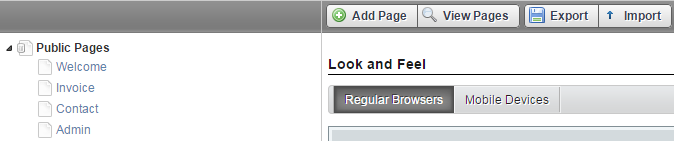

Publishing Content
This section illustrates how to add a portlet, and other types of content. You can upload three types of contents via a LAR file 1) Web Content 2) Documents and Media, and 3) Entire Site. Be careful not to confuse portlet-specific .lar files with site-specific .lar files.
Adding a Portlet
Users can be granted different roles that have the ability to place one or more portlets on a page. In addition, Pages can be configured so that specific roles can only place portlets on a specific section of a page. We also have the ability to add preconfigured portlets to a library, from which the portlets can be dropped on a page.
Steps:
- Log into portal as a content administrator.
- Adding and manipulating portlets requires Edit Controls to be enabled. Check the box in the dock bar.
- Note that the dockbar only appears if a user has the ability to perform the functions on the dockbar in the context of the page the user is viewing
- On the dockbar, click Add.
- If the portlet you want to add is on the list, add it to the page.
- If it is not on the list, click more.
- When the add portlets modal appears, type the first few letters of the portlet in the search field.
- There are two ways to add the portlet to the page:
- Click the Add button; this will add the portlet to the page in the top left most position.
- Drag and drop the portlet on a page.
- Some portlets are unique application portlets that can only be added once to a page (Ex. Documents and Media).
- Most portlets are instanceable, meaning that they can be added more than once on any page (Ex. Asset Publisher, Web Content Display).
- When a portlet is added to a page, it can be added to any pane in a page layout
- A user must have the permission to add a portlet to a pane
- If a user has the abiltity to add portlets, the default is to be able to add a portlet anywhere on a page.
- A portlet will size to 100% of the width of a pane in a page layout and will to 100% of the portlet height.
- Portlet borders can be enabled and disabled.
- Portlets can have custom titles; Titles can be edited by clicking on them.
- Modifying the permissions to a portlet as defined in the "Controlling Access to and Audience for Content" section.
Upload Web Content
You can upload the web content via a LAR file.
Steps:
- Log in to your site as a Portal Administrator.
- Under your site section, click Web Content.
- On the right corner, click
 and select Export/Import.
and select Export/Import.
- Click the Import tab, select Choose File to select the desired LAR file. Then, click Import.

- You have successfully imported the Web Content.
Upload Documents and Media
You can upload documents and media via a LAR file.
Steps:
- Log in to your site as a Portal Administrator.
- Under your site section, click Documents and Media.

- On the right corner, click and select Export/Import.

- Click Public Pages and then click Import.
 - Choose the LAR file and then click Import.

- Click the Import tab, select Choose File to select the desired LAR file. Then, click Import.

- You have successfully imported documents and media.
Upload Entire Site
You can upload the entire site via a LAR file.
Steps:
- Log in to your site as a Portal Administrator.
- Under your site section, click Web Content.
- On the right corner, click and select Export/Import.

- Click the Import tab, select Choose File to select the desired LAR file. Then, click Import.

- You have successfully imported the Web Content.
Upload a Portlet
This section illustrates how you can import a portlet using the portlet-specific LAR file.
Steps:
- Log into the Covisint App Cloud Developer Portal.
- Click Go to and Control Panel.
- Click Plugins Installation.
- Click Private Plugin Installer.

- Click Upload File, and then choose a WAR file to install a layout template, and click Install.